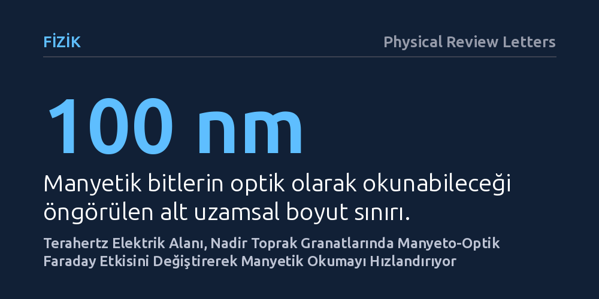

FIZIK · Physical Review Letters · 2026-10-12
Araştırmacılar, terahertz elektrik alan darbelerinin nadir toprak demir granatlarındaki manyeto-optik okuma üzerindeki etkisini inceledi. Düşük sıcaklıklarda bu darbelerin kristal alanı geçişlerini uyararak Faraday etkisini aşırı hızlı biçimde değiştirdiği ve 100 nanometre altı manyetik okumayı mümkün kılabileceği bulundu.
Manyetik verilerin yavaş manyetik alanlar yerine aşırı hızlı elektrik darbeleriyle ve 100 nanometrenin altındaki ölçeklerde okunabileceğini gösteriyor.

Günlük hayatımızda kullandığımız dijital depolama aygıtları verileri manyetik alanların yönü olarak saklar. Bu verileri okurken geleneksel manyetik okuyucu başlıklar yerine ışıktan yararlanmak, okuma hızını artırmak için uzun süredir araştırılan bir yöntemdir. Ancak manyetik durumların ışıkla okunmasında kullanılan klasik optik süreçler de belirli hız ve ölçek sınırlarına takılmaktadır.
Araştırmacıların peşine düştüğü temel problem, elektrik alanlarını kullanarak manyeto-optik okuma hızını pikosaniye gibi aşırı kısa zaman aralıklarına çekip çekemeyecekleriydi. Manyetik durum manyetik bobinler yerine doğrudan çok hızlı elektrik darbeleriyle etkilenebilirse, veri okuma teknolojisinde kayda değer bir hız artışı sağlanabilirdi.
Bu soruyu test etmek için araştırmacılar, tek kristal holmiyum demir granat numunesini laboratuvarda kontrollü bir ortama yerleştirdiler. Malzeme, iki karşıt manyetik alt yapının birbirini sıfırladığı manyetizasyon telafi sıcaklığının altına kadar soğutuldu. Bu sıcaklık eşiği aşıldığında malzemenin kristal kafesi bozuluyor ve atomların spin yönelimleri değişiyordu.
Soğutulan kristale terahertz frekansında yalnızca tek bir döngüden oluşan aşırı hızlı bir elektrik alanı darbesi gönderildi. Ardından araştırmacılar, manyetik durumu optik yolla tespit etmek için standart olarak kullanılan Faraday etkisinin bu elektrik darbesine nasıl tepki verdiğini ve ışığın kutuplanma açısının ne kadar hızla değiştiğini ölçtüler.
Yapılan ölçümler, terahertz elektrik alanının manyeto-optik Faraday etkisinde beklenmedik ve aşırı hızlı bir bozulma meydana getirdiğini ortaya koydu. Bu etki rastgele gerçekleşmiyordu; yalnızca kristalin telafi sıcaklığının altına inildiğinde, atomik birim hücre biçim değiştirip holmiyum iyonlarının spinleri konik bir çift şemsiye yapısı oluşturduğunda devreye giriyordu.
Deney sonuçlarının analizi, bu hızlı değişimin mekanizmasını da aydınlattı. Terahertz elektrik alanı, simetrisi bozulmuş oksijen kafesi içindeki holmiyum iyonlarının kristal alanı seviyeleri arasındaki elektronik geçişleri rezonans yoluyla uyarıyordu. Üstelik araştırmacılar bu etkinin sadece holmiyum ile sınırlı kalmadığını, benzer bir yapıya sahip terbiyum demir granatta da aynen gözlendiğini doğruladılar.
Elde edilen bulgular, manyetik bir malzemenin durumunu okumak için illa yavaş manyetik alanlara ihtiyaç olmadığını, uygun koşullarda aşırı hızlı elektrik alanlarının da bu işi yapabileceğini gösteriyor. Yazarlar bu mekanizmanın, 100 nanometrenin altındaki son derece küçük uzamsal ölçeklerde bulunan manyetik bitlerin aşırı hızlı biçimde okunmasının önünü açabileceğini belirtiyor.
Bununla birlikte çalışmanın önemli bir uygulama engeli bulunuyor. Söz konusu aşırı hızlı manyeto-optik etki, şimdilik sadece çok düşük sıcaklıklarda ve belirli kristal yapısına sahip özel malzemelerde gerçekleşiyor. Dolayısıyla bulgunun gündelik tüketici elektroniğine girmesi için oda sıcaklığında benzer rezonanslar sergileyebilecek yeni malzeme bileşimlerinin araştırılması gerekiyor.